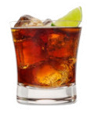

Bond ordered an Americano and examined the sprinkling of overdressed customers...- Ian Flemming, Casino Royal Book Series 1953
Cuba Libre means 'Liberate Cuda' in Spanish.
During the Ten Years war from 1868 soldiers drank a mixture of molasses, rum and lime while fighting for independance.
It's popularity has increased due to Coca Cola and Bacardi Rum.